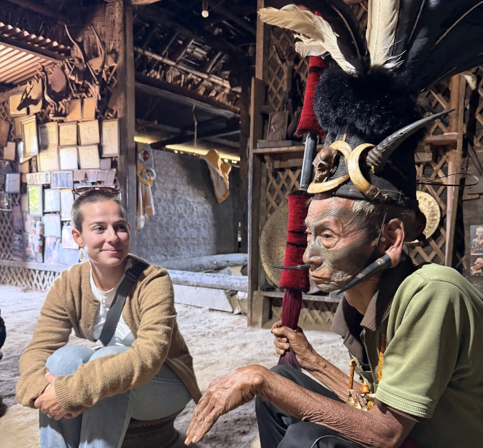
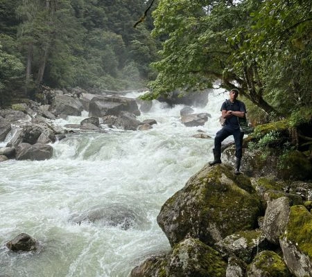
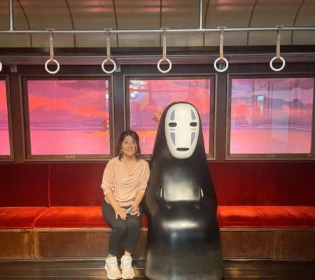
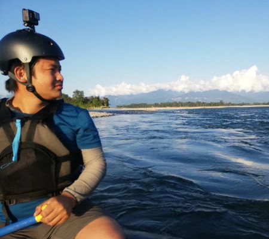
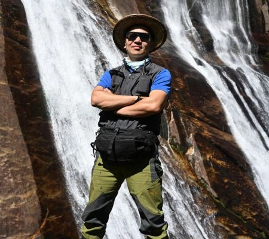
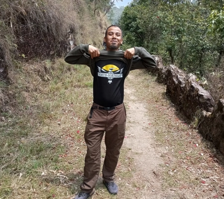
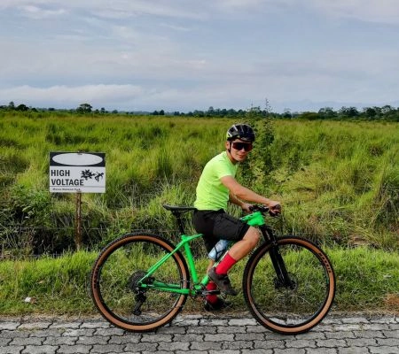
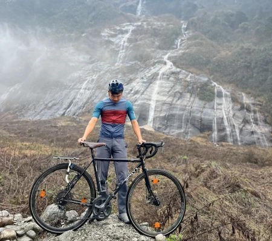
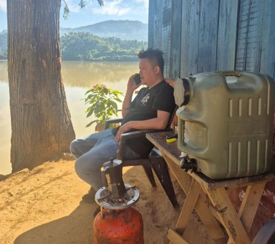

Local perspective
Journeys are led and supported by people who understand the roads, trails, rivers, villages, food, languages and seasonal rhythms of the region.
About us
How we began
After more than seven years working in the outdoors across India, we moved back east and started North by Northeast Journeys in 2010. It took time to arrive at a clear vision, because the real question was never just where to take people. It was how to do it honestly.
From the beginning, we chose active, interactive and authentic travel over packaged spectacle. We do not want to alter the local way of life to satisfy tourist expectations. Instead, our role is to facilitate observation, conversation and experience in a way that feels real, respectful and unforced.
Northeast India is culturally and ecologically sensitive. Change here happens slowly, but surely, and tourism has to be careful about the direction of that change. Our itineraries are built to go beyond the superficial, guided by local specialities, practical realities and, most importantly, conscience.

Our vision for the region
We want guests to see Northeast India through local perspective, while making travel safe, enjoyable and responsible.
Journeys are led and supported by people who understand the roads, trails, rivers, villages, food, languages and seasonal rhythms of the region.
Where possible, we use locally owned homestays, lodges and community guest houses instead of removing travellers from the places they came to understand.
We create space for genuine encounters, not staged performances. The best moments often happen through meals, markets, farms, festivals and everyday life.
Our responsibility quotient
Our intent has always been to make travel more locally useful, without changing the overall way of life that makes this region special. We began with an all-local team of willing individuals: people not shaped by conventional ideas of tourism, but deeply capable in their own surroundings.
Over the years, much of our learning has come through trial and error. We try to generate income for local people in a way that is meaningful, but not disruptive; substantial enough to matter, without becoming the only reason a family, village or community engages with travellers.
We do not encourage people to dress up or perform for tourists. Culture is best understood in its own time and place. We also do not bargain with the people at the base of the chain: the guides, drivers, hosts, cooks, mechanics, farmers and field hands who make the journey possible. Dignity and equality of labour matter.
Local team and field support
Locally owned transport wherever practical
Purchases from small local businesses
Family and community-owned accommodation
Leave-no-trace outdoor practice
The people you travel with
On our tours, the experience is shaped as much by the people you meet as by the route itself. You will usually travel with a small, locally rooted team who know the roads, trails, rivers, food, languages and rhythms of the region.

With over 20 years as an outdoor professional, Roheen is far more at home outside than indoors. He is a walking encyclopedia of the region.

Roheen's better half, Ran brings what he lacks: a meticulous office, clear communication and a sharp feel for what each client needs.

Iho is a one-man army. He does it all: setting up camp, guiding a raft, leading a trekking group or getting deep into the region's flora and fauna.

Joho is another one-man army. From organizing an entire trek to building a Taj Mahal out of bamboo, he has a flair for making things with his hands.

KD is our "one-man army" Meghalaya chapter. He builds his own house, welds, carpenters, drives; you name it, he does it.

Ahonda is mad about cycles. Give him a steep uphill and he will smile the entire day. Well mannered and ever helpful.

Raikom is the quiet type, going about his work without much ado. Excellent at leading cycling as well as walking groups.

For the last 13 years, Pegu has been sorting out all the transportation for our tours. An excellent driver with a great sense of humor.